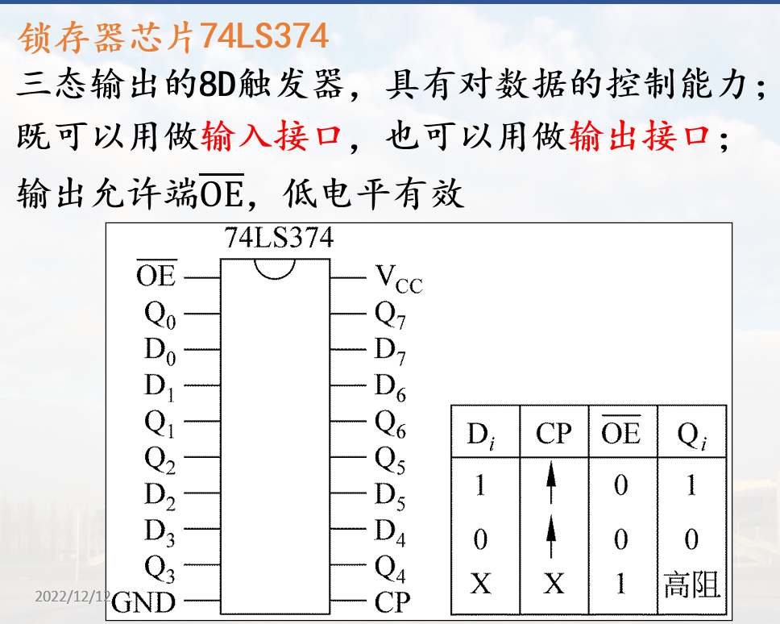

简单接口电路及应用
三态门接口
三态门具有数据控制能力, 常用作输入接口

74LS244
- 8个三态门
- 两个控制端:
- 控制端有效时, 外设与总线联通

示例

锁存器接口
具备对数据的锁存能力, 常用作输出接口
CPU输出的数据经数据总线送锁存器锁存, 直到设备将数据取走
采用具有信息存储能力的双稳态触发器构成;

锁存器芯片74LS273
- 8D触发器, 有锁存能力, 常用作输出接口
- S:异步复位端, 低电平有效
- CP：同步脉冲输入, 上升沿触发

锁存器芯片74LS374
- 三态输出的8D触发器, 具有对数据的控制能力;
- 既可以用做输入接口, 也可以用做输出接口;
- 输出允许端, 低电平有效

74LS374作输出接口示例

74LS374作输入接口示例

IO接口应用示例
例1
外设状态端口地址为03FBH, 第5位(bit5)为状态标志（=1忙, =0准备好）
外设数据端口地址为03F8H, 写入数据会使状态标志置1; 外设把数据读走后又把它置0
试画出其电路图, 并将BUF中的100个字节数据输出。
电路图

控制程序

LEA SI, BUF
MOV CX, 100
AGAIN: MOV DX, 03FBH ; 状态端口
WAITT: IN AL,DX ; 读状态端口
TEST AL,20H
JNZ WAITT ; 设备
MOV DX,03F8H ; 数据端口
MOV AL, [SI]
OUT DX, AL ; 写数端口
INC SI
LOOP AGAIN
HLT
例2
- 根据开关状态在7段数码管上显示数字或符号
- 当4个开关的状态分别为
0000～1111时，在7段数码管上对应显示’0’～’F’ - 设输出端口的地址为
0F0H,输入端口地址为0F1H

发光二极管高电平亮
输入端口: 连开关
输出端口: 连数码管
电路图

74LS273作为输出接口. 74LS244作为输入接口
DP为小数点指示, 不使用
要发光二极管亮, 则对应的 Q 则应为1
开关关, 低电平; 开关开, 高电平
数码管显示

注意小数点不显示, Dp为0
控制程序
……
Seg7 DB 3FH,06H, 5BH,4FH,66H,6DH, 7DH,07H,
7FH,67H,77H, 7CH,39H,5EH,79H,71H
……
LEA BX, Seg7
MOV AH, 0
GOON: IN AL, 0F1H ;读输入端口
AND AL, 0FH ;屏蔽高4位，保留低4位的开关状态
MOV SI, AX ;计算在Seg7中的位移量
MOV AL, [BX+SI]
OUT 0F0H, AL ;写输出端口
JMP GOON